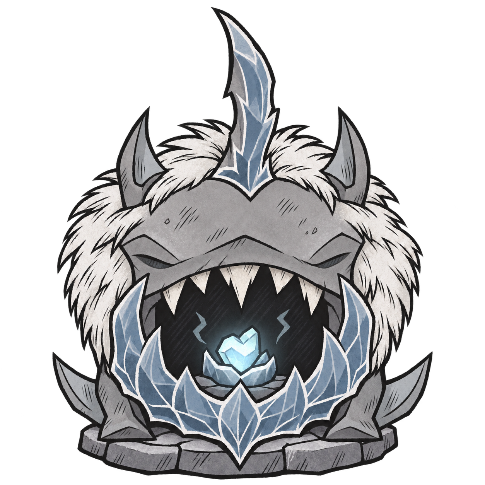
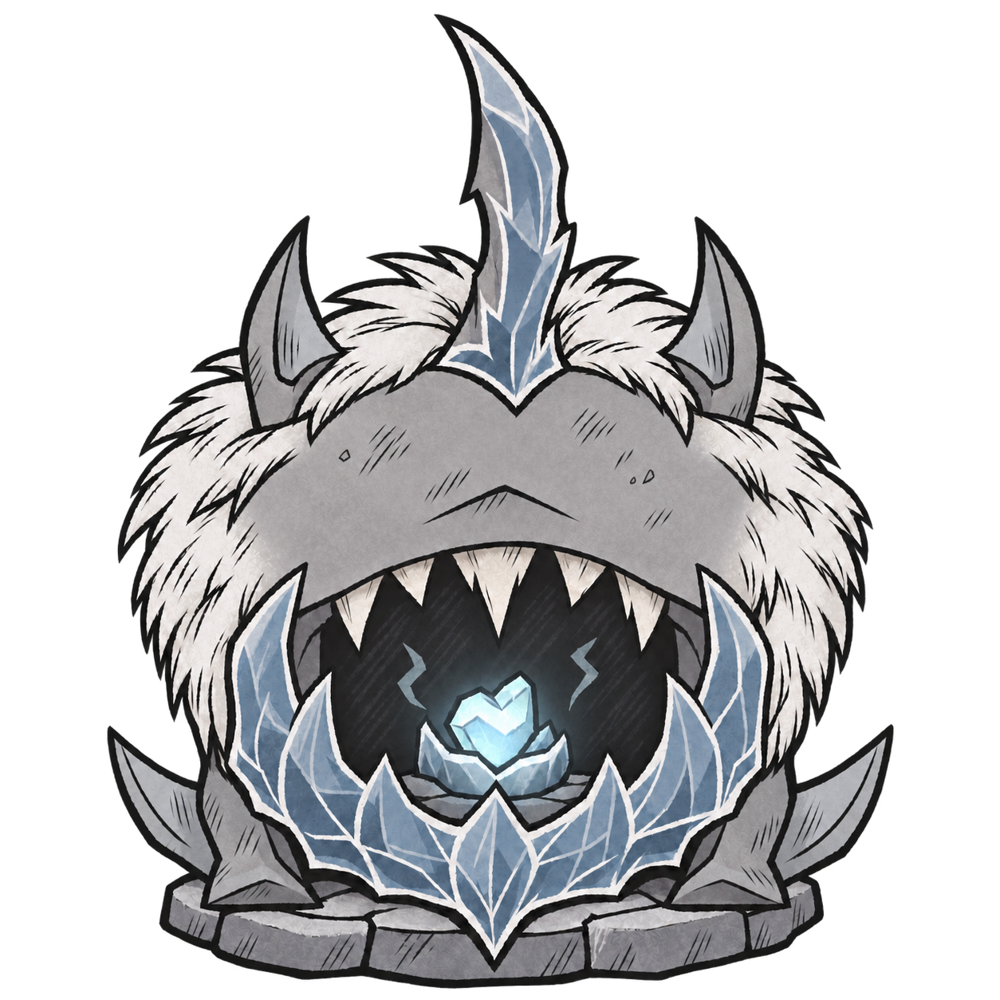

以第四版为底稿，彻底去掉两侧眼窝及眼形轮廓，用连续灰色石面补齐，保留整体造型。静态透明底预览，尚未替换游戏资源。

保留作为基准：冰颚托底，张嘴含核，白鬃与冰鳍构成完整轮廓；两侧仍有浅刻眼窝。

原眼窝位置补成连续灰色石面，移除两侧眼形线条。保留第四版头型、张嘴含核、白鬃、冰鳍及完整冰下巴。
统一 160 × 160 展示框，仅用于比较轮廓和细节可读性，不代表实机大小。
保持第二版原图，本轮没有重新绘制。